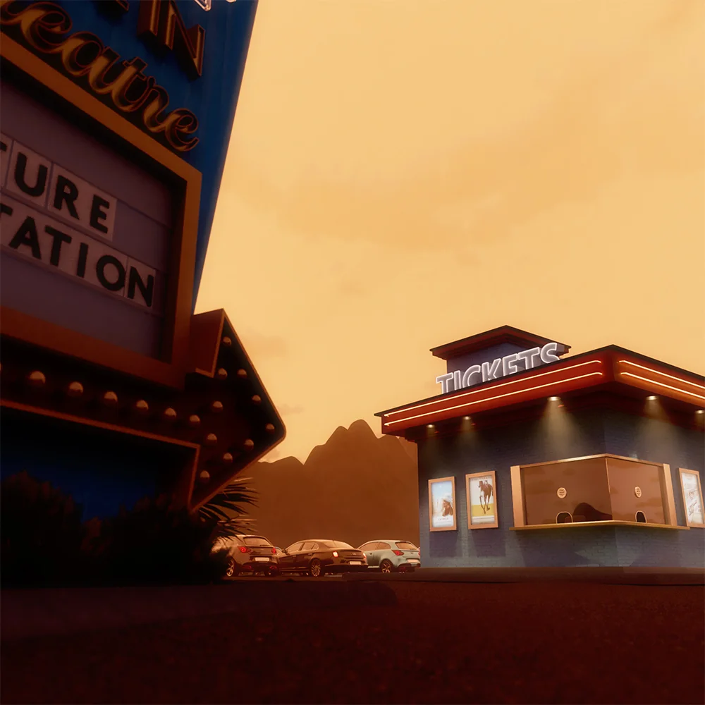
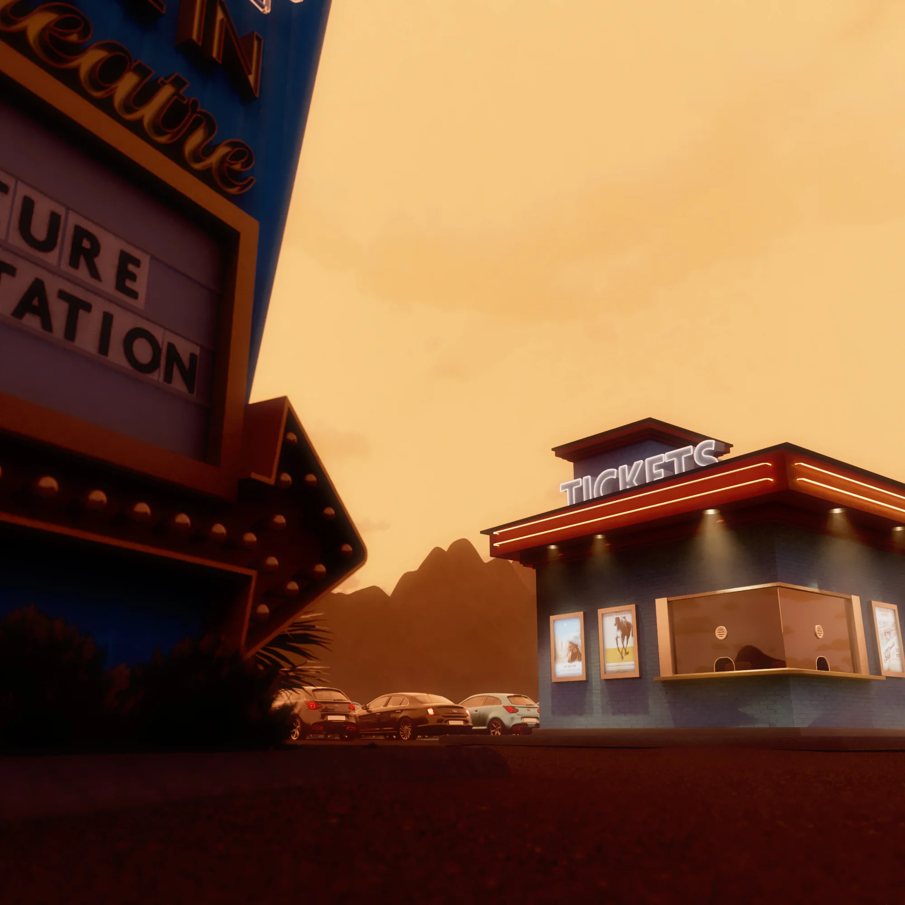
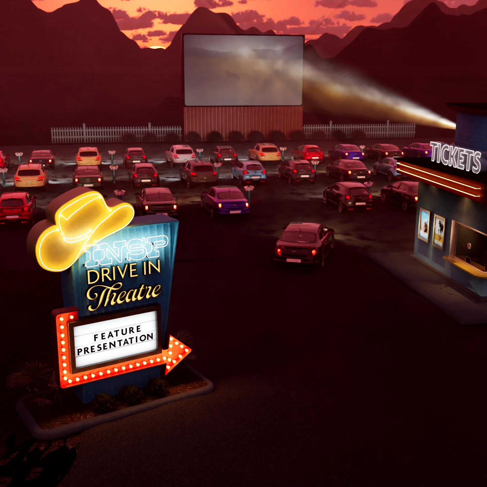
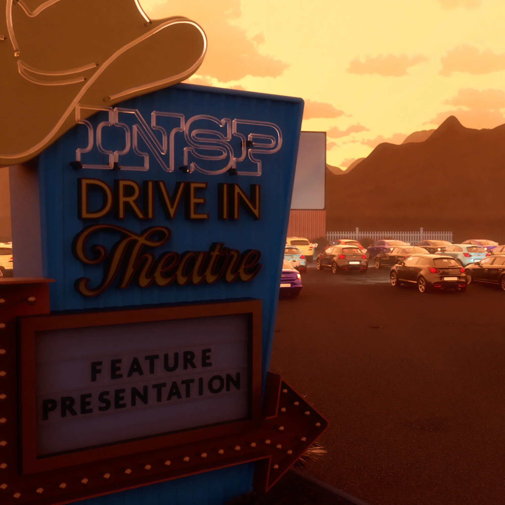
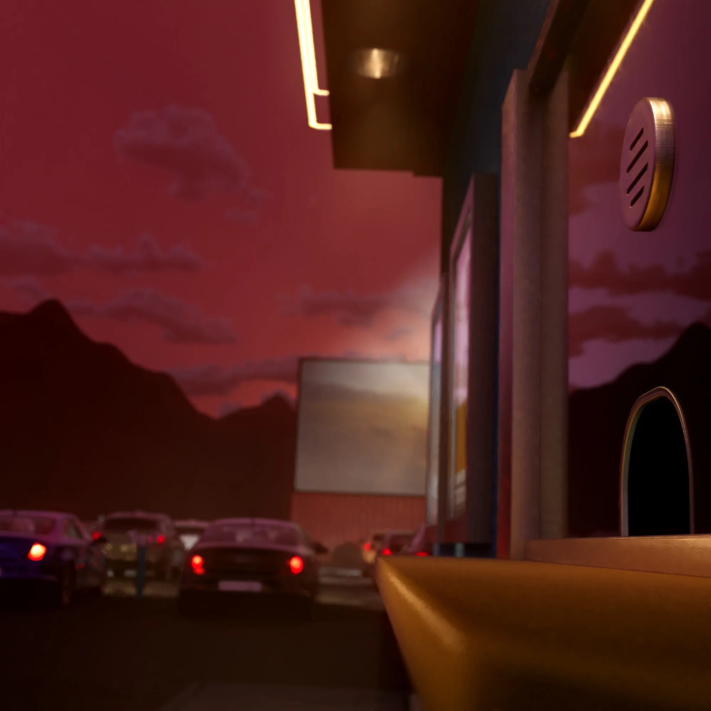

Drive In Movie Intro

The Ask
INSP's programming is heavy on classic western television shows, but they also air a lot of western movies and western-adjacent content. They wanted a short intro that signaled to the viewer that something special was happening.
The Result
With the types of movies branching out past typical cowboy westerns, we created an Americana, Route 66–inspired drive-in movie theatre set in a western landscape. It's a nod to both the typical INSP programming and the brand of nostalgia their audience enjoys. The result is a slick "INSP Presents" style pre-roll that tells the viewer they can settle in for a spell.




Credits
- Art Direction / 3D Modeling / Animation: Jared Hanline
- Sound Design: Bill Mazzola